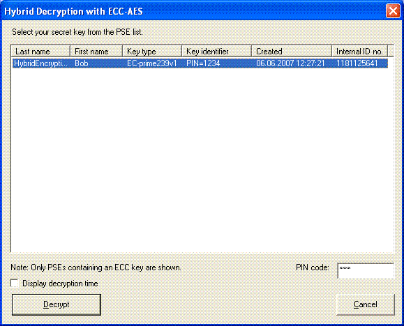
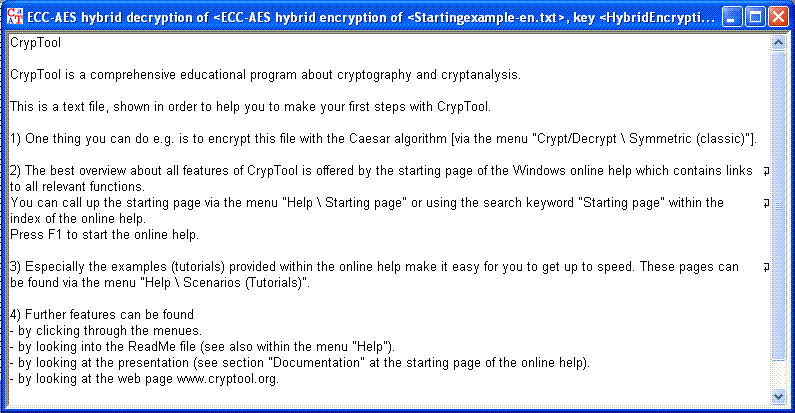

This dialog is supposed to restore encrypted documents based on the ECIES-encryption.
You can start the decryption dialog through the menu selection En-/Decrypt \ Hybrid\ ECC-AES-decryption.
Afte selecting the right key pair and entering the valid PIN-Code you can start encryption by clicking the button decryption.
The required encryption time can be shown by activating the checkbox.
The plaintext of the encrypted ECIES-document is shown in the CrypTool main window:
